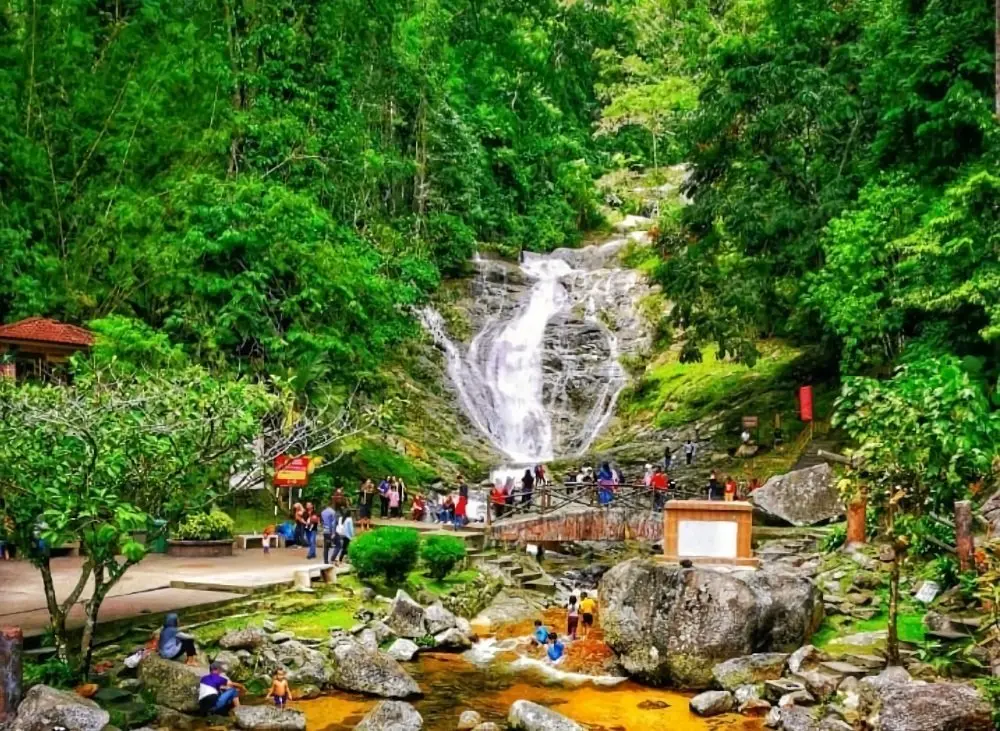
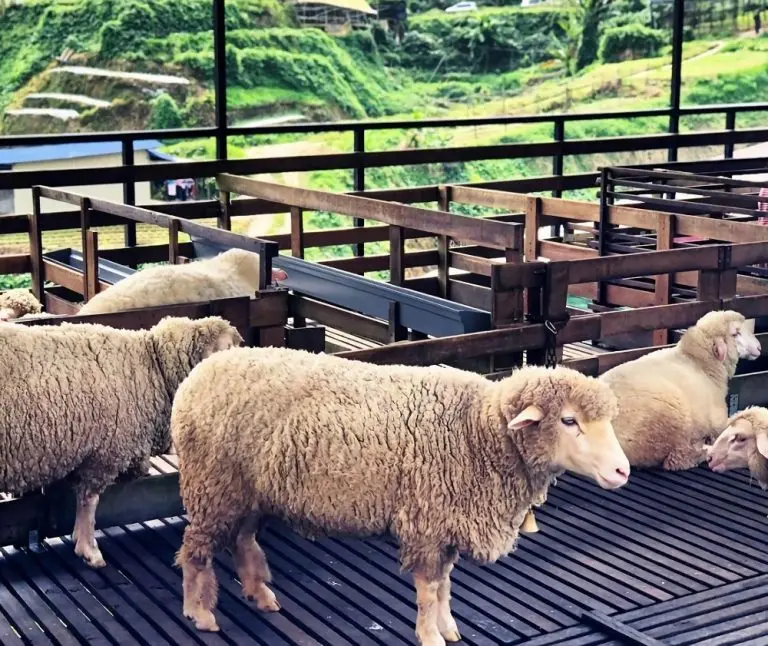
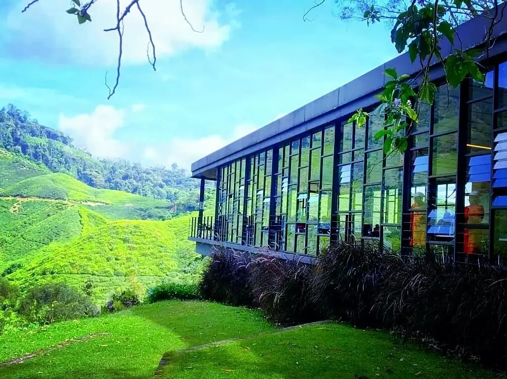

Cameron Highlands
Tour Detail
Cameron Highlands,pahang
Any Time
Any Time
Description
Cameron Highlands is a vibrant and stunning region in Peninsular Malaysia, with a wide variety of activities and attractions to suit all types of travellers. Here are some of the exciting activities and attractions in Cameron Highlands:1. Climb to the top of Cameron Peak: Cameron Peak is the highest mountain in Peninsular Malaysia, with an altitude of about 2,183 meters. Climbing Cameron Peak is a dream for many adventure lovers, offering stunning views and an unforgettable experience.
2. Visit tea plantations: Cameron Highlands is famous for its charming tea plantations such as Pak Lai Tea Plantation and Queen of the Orient Tea Plantation. You can take a tea plantation tour to learn how tea is grown and processed, and taste fresh Highland tea.
3. Explore the natural landscape: The natural landscape of Cameron Highlands is magnificent and diverse, including jungles, waterfalls, valleys and lakes. You can explore these stunning sites on foot, horseback riding, or on an eco-tour.
4. Experience culture and history: Cameron Highlands has many places of historical and cultural significance, such as Rhodes Fort, the Iron Head Hunting Museum and the Rose Garden. You can take a guided tour and learn about local traditions and history.
5. Taste the food: There are many food options in Cameron Highlands, including local and international cuisine. You can sample Malaysian specialties such as Peranakan cuisine and satay, or try local fresh fruits and grilled meats.
6. Participate in festivals: There are many festivals in Cameron Highlands, such as the Tea Culture Festival and the Jungle Music Festival. These events provide opportunities to experience local culture, arts and entertainment.
Gallery


